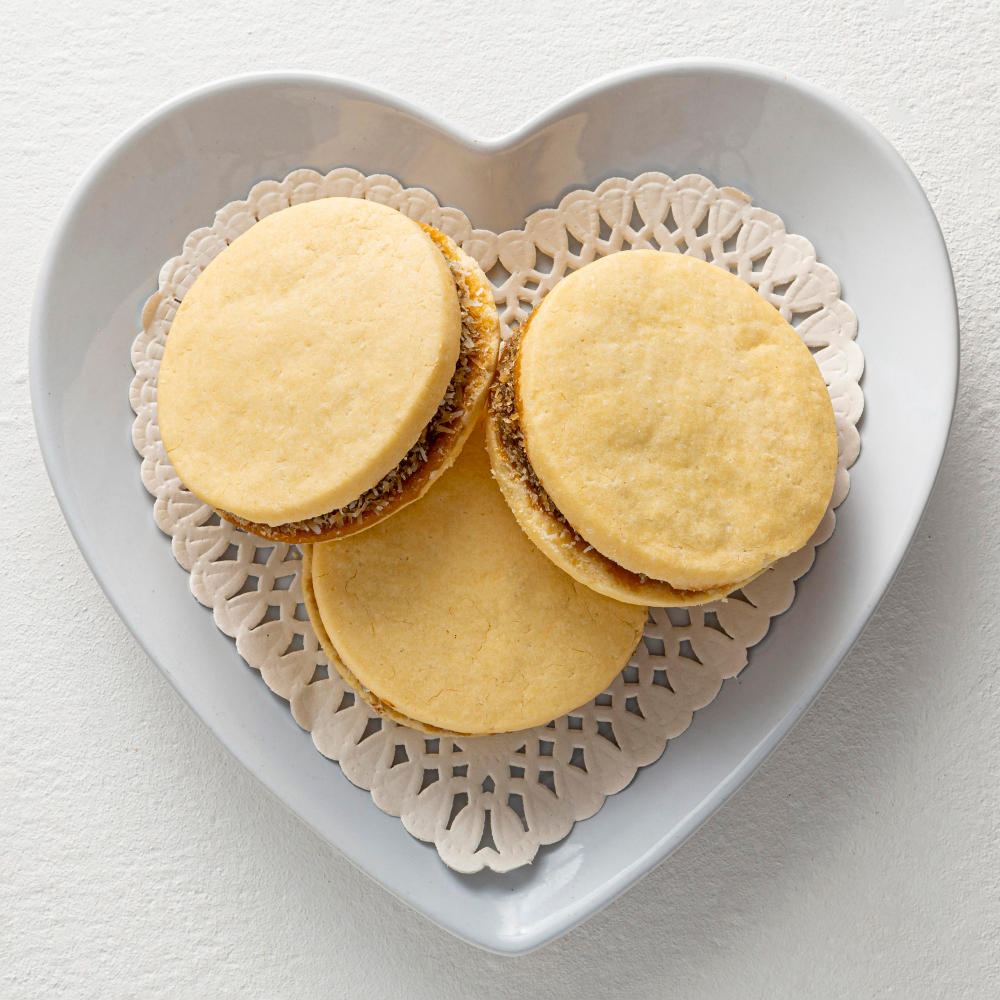

Panes de masa madre
Lo que la cuarentena nos enseño, deliciosos y fáciles de hacer
Brownies caseros
Pocas comidas tienen tanto aire juvenil como los brownies, algunos graciosos, pero nunca desabridos

Alfajores de maizena
De las comidas argentinas mas deliciosas, un alfajor casero que la rompe!

Cookies
Te animas a hacer tus propias pepas de chocolate? Acá te enseñamos cómo

Dulces patagónicos
No sólo la cerveza artesanal fue furor en toda a Argentina, acá te mostramos otros productos dulces del sur
Claves para emprender en panadería
Algunos tips organizacionales que nos sirvieron en nuestros comienzos, mandarse a emprender no es tarea fácil pero estos tips pueden facilitarte el camino.